Kinesthésie
Plume sur Rhodoïde
Louis Cane, 1998
Percevoir un mouvement dans ton propre corps devant une image immobile : ton cerveau simule la chute des plumes.
« Fixe une seule plume, dix secondes, sans bouger. »
Tu es le sujet R26-0417. Tu dors depuis 474 ans à bord d'une arche en orbite. Une voix t'appelle : le protocole RÉSONANCE commence.
Version texteInitialisation des systèmes
Touche les boutons pour agir · glisse le doigt pour regarder
F agir · 12 répondre · Espace passer une réplique · souris pour regarder
Les quatre œuvres que tu viens de traverser existent. Elles t'attendent pour la clôture de l'exposition Résonances.

Un parcours sensoriel pour la clôture de l'exposition Résonances à la galerie Ceysson & Bénétière. Quatre œuvres, quatre sens que personne ne t'a appris à l'école.
21 & 22 novembre 2026
11h – 19h
Entrée libre
Audioguide offert
Nous emportons des graines, des livres et quatre œuvres d'art. Une œuvre ne sert qu'à une chose : faire réagir un corps.
Programme HOPE · charte de l'arche SPES-07, 2026Les cinq sens d'Aristote décrivent seulement ton interface avec le dehors. Les neurosciences en comptent plus de vingt, et les plus puissants regardent vers l'intérieur. Le parcours s'en sert pour faire tomber la barrière de l'art contemporain.
Voir, entendre, toucher, sentir, goûter : des capteurs tournés vers l'extérieur. Utiles, mais incomplets.
Ne pas toucher, ne pas goûter, ne pas faire de bruit. Tes sens externes sont bridés : c'est le déclencheur.
Privé de contact, ton cerveau bascule sur la position du corps, le rythme du cœur, la perception du temps.
Louis Cane, 1998
Percevoir un mouvement dans ton propre corps devant une image immobile : ton cerveau simule la chute des plumes.
« Fixe une seule plume, dix secondes, sans bouger. »

Louis Cane, 2018
L'œil déclenche une sensation tactile sans contact : le cortex reconstitue le froid du fer et le lisse de la résine.
« Approche-toi à trente centimètres. Ne touche pas. »

Aurélie Pétrel, 2025
Le sens de ta taille et de ta place dans l'espace : les troncs te dominent, ton cerveau recalcule ton échelle.
« Place tes pieds sur le repère, à soixante centimètres. »

Philippe Favier, 2025
Sentir l'intérieur de ton corps et l'écoulement du temps : un souvenir d'enfance change le rythme de ton cœur.
« Penche-toi à vingt centimètres. Ralentis. »
Avant l'embarquement de la cohorte R-26, le programme HOPE ouvre au public une séance de calibration des sens. Les quatre œuvres du lot 42-SE y sont montrées une dernière fois sur Terre.